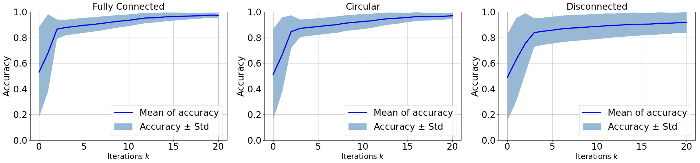
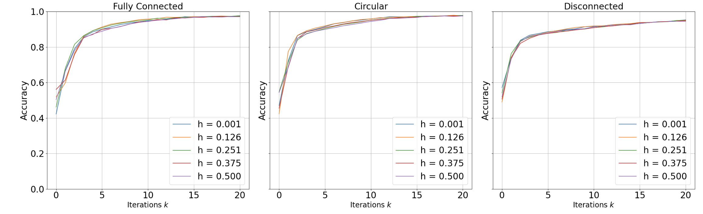
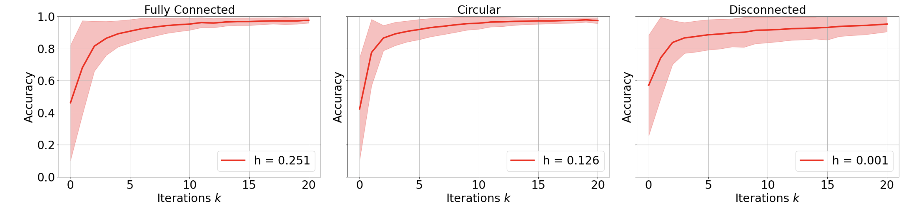
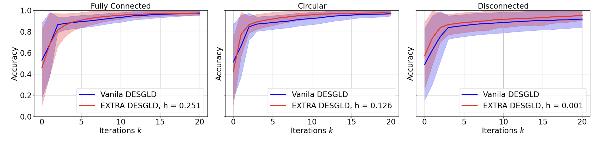
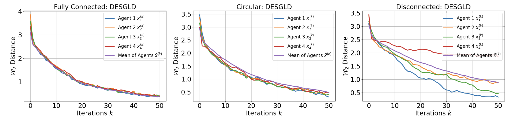
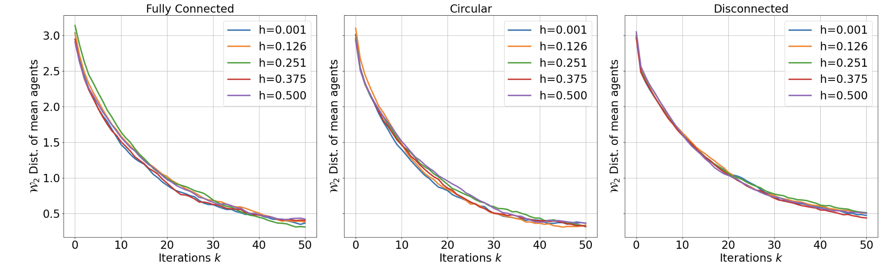
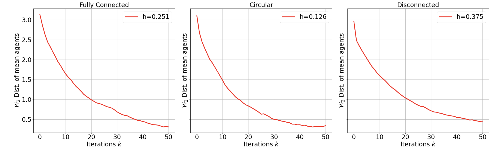
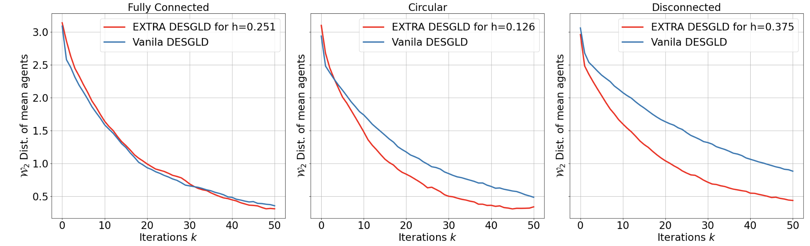

Usage Example
pip install git+ssh://git@github.com/mrislambd/desgld_package.git
Demo Example
Here this is a complete example of how to use the package desgld.
import matplotlib.pyplot as plt
import matplotlib as mpl
import numpy as np
from tqdm import tqdm
from sklearn.model_selection import train_test_split
from desgld import DeSGLD
from desgld import NetworkArchitecture
from desgld import ClassificationAccuracy
from desgld import Wasserstein2Distance
Bayesian Logistic Regression with Synthetic Data
Parameters
size_w=6; N=100; sigma=1; eta=0.0005; T=20; dim=3; b=32; lam=10; total_data=1000; hv=np.linspace(0.001,0.5,5)
Data
x = []
np.random.seed(10)
for i in range(total_data):
x.append([-20 + (20 + 20) * np.random.normal(), -10 + np.random.normal()])
np.random.seed(11)
y = [1 / (1 + np.exp(-item[0] * 1 - 1 * item[1] + 10)) for item in x]
for i in range(len(y)):
temp = np.random.uniform(0, 1)
if temp <= y[i]:
y[i] = 1
else:
y[i] = 0
x_all = np.array(x)
y_all = np.array(y)
x_all = x
y_all = y
x_all = np.insert(x_all, 0, 1, axis=1)
x = x_all
'''
Data splitting
'''
X_train1, x_trainRemain, y_train1, y_trainRemain = train_test_split(
x, y, test_size=0.83333, random_state=42
)
X_train2, x_trainRemain, y_train2, y_trainRemain = train_test_split(
x_trainRemain, y_trainRemain, test_size=0.8, random_state=42
)
X_train3, x_trainRemain, y_train3, y_trainRemain =train_test_split(
x_trainRemain, y_trainRemain, test_size=0.75, random_state=42
)
X_train4, x_trainRemain, y_train4, y_trainRemain = train_test_split(
x_trainRemain, y_trainRemain, test_size=0.66666666, random_state=42
)
X_train5, X_train6, y_train5, y_train6 = train_test_split(
x_trainRemain, y_trainRemain,test_size=0.5, random_state=42
)
x = [X_train1, X_train2, X_train3, X_train4, X_train5, X_train6]
y = [y_train1, y_train2, y_train3, y_train4, y_train5, y_train6]
Vanila DeSGLD approximation
net=NetworkArchitecture(size_w)
wf=net.fully_connected()
wc=net.circular_network()
wd=net.fully_disconnected()
nets=np.array([wf,wc,wd])
Run the Vanila DeSGLD algorithm for all three networks
three_net_combined=[]
for i in tqdm(range(len(nets))):
method=DeSGLD(size_w,N,sigma,eta,T,dim,b,lam,x,y,nets[i],hv,'logistic')
vdesgld,_=method.vanila_desgld()
three_net_combined.append(vdesgld)
Compute the accuracy
desgld_acc=[]
desgld_std=[]
for desgld in tqdm(three_net_combined):
desgld_accuracy=ClassificationAccuracy(x_all,y_all,desgld,T)
d_acc,d_std=desgld_accuracy.compute_accuracy()
desgld_acc.append(d_acc)
desgld_std.append(d_std)
desgld_acc=np.array(desgld_acc)
desgld_std=np.array(desgld_std)
Next we plot the accuracy of the classification from the vanila DeSGLD
fig, axs=plt.subplots(1, len(desgld_acc),figsize=(26.4,6.6))
mpl.rcParams['font.size'] = 24
index = list(range(T + 1))
titles=["Fully Connected","Circular","Disconnected"]
for i, (d_acc, d_std, title) in enumerate(zip(desgld_acc, desgld_std, titles)):
axs[i].plot(d_acc, 'b-', linewidth=3)
axs[i].fill_between(index, d_acc + d_std, d_acc - d_std, alpha=0.5)
axs[i].set_title(title, fontsize=24)
axs[i].legend(['Mean of accuracy', r'Accuracy $\pm$ Std'], loc='lower right', fontsize=24)
axs[i].set_xlabel(r'Iterations $k$', fontsize=20)
axs[i].set_ylabel('Accuracy', fontsize=24)
axs[i].set_ylim(0, 1)
axs[i].tick_params(labelsize=24)
axs[i].grid()
plt.tight_layout()
plt.show()
The plot

EXTRA-DeSGLD Approximation
three_net_combined=[]
for i in tqdm(range(len(nets))):
method=DeSGLD(size_w,N,sigma,eta,T,dim,b,lam,x,y,nets[i],hv,'logistic')
edesgld,_=method.extra_desgld()
three_net_combined.append(edesgld)
Accuracy Calculations
extradesgld_acc=[]
extradesgld_std=[]
for i in tqdm(range(len(nets))):
exacc=[]
exstd=[]
for j in range(len(hv)):
extradesgld_accuracy=ClassificationAccuracy(
x_all,y_all,three_net_combined[i][j],T
)
acc,std=extradesgld_accuracy.compute_accuracy()
exacc.append(acc)
exstd.append(std)
extradesgld_acc.append(exacc)
extradesgld_std.append(exstd)
extradesgld_acc=np.array(extradesgld_acc)
extradesgld_std=np.array(extradesgld_std)
Plot of the EXTRA DE-SGLD for each of the h values
fig, axs=plt.subplots(1, 3,figsize=(26.4,8.6),sharex=True, sharey=True)
mpl.rcParams['font.size'] = 24
index = list(range(T + 1))
titles=['Fully Connected','Circular','Disconnected']
for j, title in enumerate(titles):
for i, h_value in enumerate(hv):
axs[j].plot(index,extradesgld_acc[j][i], label=f'h = {h_value:.3f}')
axs[j].set_title(title, fontsize=24)
axs[j].legend(loc='lower right')
axs[j].set_xlabel(r'Iterations $k$', fontsize=20)
axs[j].set_ylabel('Accuracy', fontsize=24)
axs[j].set_ylim(0, 1)
axs[j].tick_params(labelsize=24)
axs[j].grid()
plt.tight_layout()
plt.show()

Find the Maximum Accuracy for the optimal h values
max_acc_arrays = []
max_acc_indices = []
for i in range(len(nets)):
max_acc_array = extradesgld_acc[i][np.argmax(np.max(extradesgld_acc[i], axis=1))]
max_acc_index = np.argmax(np.max(extradesgld_acc[i], axis=1))
max_acc_arrays.append(max_acc_array)
max_acc_indices.append(max_acc_index)
max_acc_arrays = np.array(max_acc_arrays)
max_acc_indices = np.array(max_acc_indices)
max_hv_values = hv[max_acc_indices]
max_acc_stds=np.zeros((len(nets), (T+1)))
for i in range(len(nets)):
max_acc_stds[i] = extradesgld_std[i, max_acc_indices[i]]
Next plot the maximum accuracy for the optimal h
fig, axs=plt.subplots(1, 3,figsize=(26.4,6.6),sharex=True, sharey=True)
mpl.rcParams['font.size'] = 24
index = list(range(T + 1))
titles=['Fully Connected','Circular','Disconnected']
for i,title in enumerate(titles):
axs[i].plot(max_acc_arrays[i],'r-', linewidth=3,label=f'h = {max_hv_values[i]:.3f}')
axs[i].fill_between(
index,max_acc_arrays[i]+max_acc_stds[i],max_acc_arrays[i]-max_acc_stds[i],alpha=0.25,color='red'
)
axs[i].set_title(title, fontsize=24)
axs[i].legend(loc='lower right')
axs[i].set_xlabel(r'Iterations $k$', fontsize=24)
axs[i].set_ylabel('Accuracy', fontsize=24)
axs[i].set_ylim(0, 1)
axs[i].tick_params(labelsize=24)
axs[i].grid()
plt.tight_layout()
plt.show()

Now we can compare the approximations from both of the Vanila and Extra DeSGLD algorithms
fig, axs = plt.subplots(1, 3, figsize=(26.4, 6.6), sharex=True, sharey=True)
mpl.rcParams['font.size'] = 24
index = list(range(T + 1))
titles = ['Fully Connected', 'Circular', 'Disconnected']
for i, title in enumerate(titles):
axs[i].plot(desgld_acc[i], 'b-', linewidth=3, label=f'Vanila DESGLD')
axs[i].fill_between(
index, desgld_acc[i] + desgld_std[i], desgld_acc[i] - desgld_std[i], alpha=0.25, color='blue'
)
axs[i].plot(max_acc_arrays[i], 'r-', linewidth=3, label=f'EXTRA DESGLD, h = {max_hv_values[i]:.3f}')
axs[i].fill_between(
index, max_acc_arrays[i] + max_acc_stds[i], max_acc_arrays[i] - max_acc_stds[i], alpha=0.25, color='red'
)
axs[i].set_title(title, fontsize=24)
axs[i].legend(loc='lower right')
axs[i].set_xlabel(r'Iterations $k$', fontsize=24)
axs[i].set_ylabel('Accuracy', fontsize=24)
axs[i].set_ylim(0, 1)
axs[i].tick_params(labelsize=24)
axs[i].grid()
plt.tight_layout()
plt.show()

Bayesian Linear Regression with Synthetic Data
Parameters
size_w=20; N=20; dim=2; sigma=np.eye(dim); sigma_sample=1;
eta=0.009 ; T=50; lam=10; b=50; hv=np.linspace(0.001,0.5,5);
Data Generation
x=[]
for i in range(1000):
x.append([np.random.random()*1])
y=[item[0]*3-0.5+np.random.random() for item in x]
x_all=np.array(x)
y_all=np.array(y)
x_all=np.insert(x_all, 0, 1, axis=1)
cov_pri=lam*sigma
avg_post=np.dot(
np.linalg.inv(np.linalg.inv(cov_pri)+np.dot(np.transpose(x_all),x_all)/(sigma_sample**2)),
(np.dot(np.transpose(x_all),y_all)/(sigma_sample**2))
)
cov_post=np.linalg.inv(np.linalg.inv(cov_pri)+np.dot(np.transpose(x_all),x_all)/(sigma_sample**2))
x=np.split(x_all,100)
y=np.split(y_all,100)
Vanila DeSGLD Approximation
net=NetworkArchitecture(size_w)
wf=net.fully_connected()
wc=net.circular_network()
wd=net.fully_disconnected()
nets=np.array([wf,wc,wd])
Run the Vanila DeSGLD algorithm for all three networks
three_net_combined_agents=[]
three_net_combined_magents=[]
for i in tqdm(range(len(nets))):
method=DeSGLD(size_w,N,sigma,eta,T,dim,b,lam,x,y,nets[i],hv,'linear')
desgld_agents,desgld_magents=method.vanila_desgld()
three_net_combined_agents.append(desgld_agents)
three_net_combined_magents.append(desgld_magents)
Compute the w_2 distance
desgld_three_net_combined_dist=[]
for dis_agent,dis_magent in tqdm(zip(three_net_combined_agents,three_net_combined_magents)):
distance=Wasserstein2Distance(size_w,T,avg_post,cov_post,dis_agent,dis_magent)
dis=distance.W2_dist()
desgld_three_net_combined_dist.append(dis)
Next plot the distances
fig, axs=plt.subplots(1, 3,figsize=(26.4,6.6))
mpl.rcParams['font.size'] = 24
index = list(range(T + 1))
titles=["Fully Connected: DESGLD","Circular: DESGLD","Disconnected: DESGLD"]
for i in range(len(desgld_three_net_combined_dist)):
axs[i].plot(index,desgld_three_net_combined_dist[i][0],linewidth=3,label=r'Agent 1 $x_1^{(k)}$')
axs[i].plot(desgld_three_net_combined_dist[i][1],linewidth=3,label=r'Agent 2 $x_2^{(k)}$')
axs[i].plot(desgld_three_net_combined_dist[i][2],linewidth=3,label=r'Agent 3 $x_3^{(k)}$')
axs[i].plot(desgld_three_net_combined_dist[i][3],linewidth=3,label=r'Agent 4 $x_4^{(k)}$')
axs[i].plot(desgld_three_net_combined_dist[i][-1],linewidth=3,label=r'Mean of Agents $\bar{x}^{(k)}$')
axs[i].set_title(titles[i], fontsize=24)
axs[i].legend(loc='upper right', fontsize=17)
axs[i].set_xlabel(r'Iterations $k$', fontsize=24)
axs[i].set_ylabel(r'$\mathcal{W}_2$ Distance ', fontsize=24)
axs[i].tick_params(labelsize=24)
axs[i].grid()
plt.tight_layout()
plt.show()
Here is the plot

EXTRA DeSGLD Approximation
Run the EXTRA DeSGLD algorithm for all three networks
three_net_combined_agents=[]
three_net_combined_magents=[]
for i in tqdm(range(len(nets))):
method=DeSGLD(size_w,N,sigma,eta,T,dim,b,lam,x,y,nets[i],hv,'linear')
edesgld_agents,edesgld_magents=method.extra_desgld()
three_net_combined_agents.append(edesgld_agents)
three_net_combined_magents.append(edesgld_magents)
Compute the w_2 Distances
extradesgld_three_net_combined_dist=[]
for i in tqdm(range(len(nets))):
ex=[]
for j in range(len(hv)):
extradistance=Wasserstein2Distance(
size_w,T,avg_post,cov_post,
three_net_combined_agents[i][j],
three_net_combined_magents[i][j]
)
ex.append(extradistance.W2_dist())
extradesgld_three_net_combined_dist.append(ex)
extradesgld_three_net_combined_dist=np.array(extradesgld_three_net_combined_dist)
Work with the w_2 distances of mean agents
mean_dist = np.empty((len(nets), len(hv), T+1))
for i in tqdm(range(len(nets))):
for j in range(len(hv)):
mean_dist[i, j, :] = extradesgld_three_net_combined_dist[i, j, -1, :]
Plot the w_2 distance of mean agents for each h values
fig, axs=plt.subplots(1,3, figsize=(26.4,8.6), sharex=True, sharey=True)
mpl.rcParams['font.size']=24
titles=['Fully Connected','Circular', 'Disconnected']
for j, title in enumerate(titles):
for i,h_value in enumerate(hv):
axs[j].plot(mean_dist[j][i],linewidth=3, label=f'h={h_value:.3f}')
axs[j].set_title(title, fontsize=24)
axs[j].set_xlabel(r'Iterations $k$', fontsize=24)
axs[j].set_ylabel(r'$\mathcal{W}_2$ Dist. of mean agents', fontsize=24)
axs[j].tick_params(labelsize=24)
axs[j].legend(loc='upper right')
axs[j].grid()
plt.tight_layout()
plt.show()

Find the minimum distance for optimal h values
min_dist_arrays=[]
min_dist_indices=[]
for i in range(len(nets)):
min_dist_array=mean_dist[i][np.argmin(np.min(mean_dist[i],axis=1))]
min_dist_index=np.argmin(np.min(mean_dist[i],axis=1))
min_dist_arrays.append(min_dist_array)
min_dist_indices.append(min_dist_index)
min_dist_arrays=np.array(min_dist_arrays)
min_dist_indices=np.array(min_dist_indices)
min_hv_values=hv[min_dist_indices]
min_hv_values
Plot the Optimal EXTRA DeSGLD Mean Distance for the optimal h value
fig,axs=plt.subplots(1,3,figsize=(26.4,8.6),sharex=True, sharey=True)
mpl.rcParams['font.size']=24
titles=['Fully Connected','Circular', 'Disconnected']
for i,title in enumerate(titles):
axs[i].plot(min_dist_arrays[i],'r-',linewidth=3,label=f'h={min_hv_values[i]:.3f}')
axs[i].set_title(title,fontsize=24)
axs[i].set_xlabel(r'Iterations $k$', fontsize=24)
axs[i].set_ylabel(r'$\mathcal{W}_2$ Dist. of mean agents', fontsize=24)
axs[i].tick_params(labelsize=24)
axs[i].legend(loc='upper right')
axs[i].grid()
plt.tight_layout()
plt.show()

Finally, we can compare the performances from both of the algorithms
fig,axs=plt.subplots(1,3,figsize=(26.4,8.6),sharex=True, sharey=True)
mpl.rcParams['font.size']=24
titles=['Fully Connected','Circular', 'Disconnected']
for i,title in enumerate(titles):
axs[i].plot(min_dist_arrays[i],'r-',linewidth=3,label=f'EXTRA DESGLD for h={min_hv_values[i]:.3f}')
axs[i].plot(desgld_three_net_combined_dist[i][-1],linewidth=3,label='Vanila DESGLD')
axs[i].set_title(title,fontsize=24)
axs[i].set_xlabel(r'Iterations $k$', fontsize=24)
axs[i].set_ylabel(r'$\mathcal{W}_2$ Dist. of mean agents', fontsize=24)
axs[i].tick_params(labelsize=24)
axs[i].legend(loc='upper right')
axs[i].grid()
plt.tight_layout()
plt.show()
And, here is the plot
